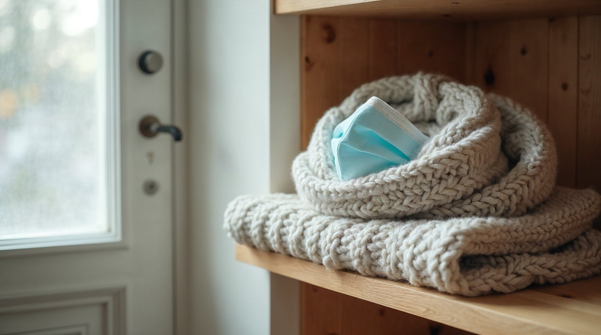
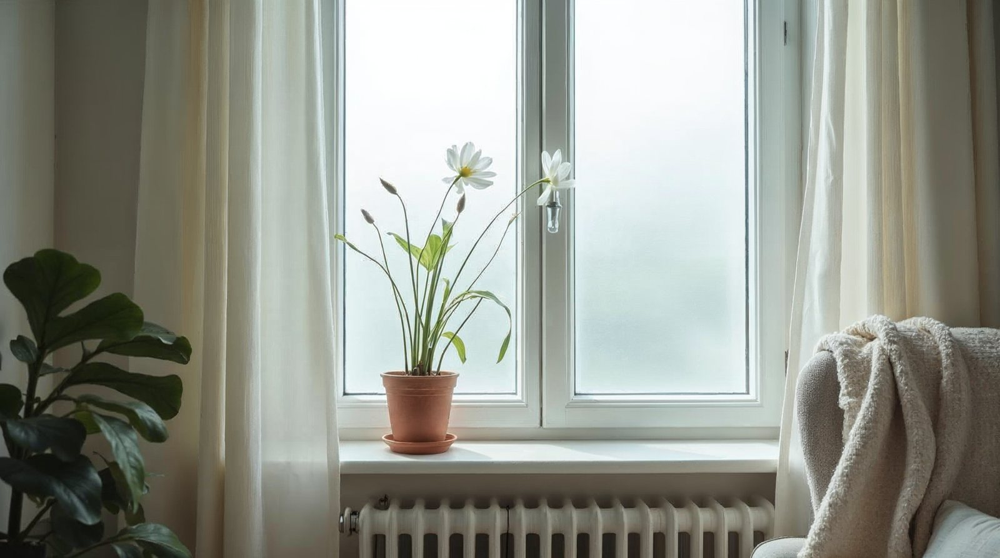
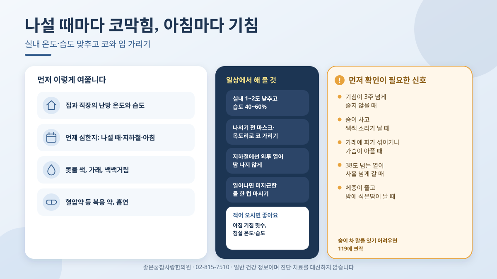

이종호 한의사 감수좋은꿈참사랑한의원 대표원장 (한의사 면허번호 19769)발행 2026-11-27 · 수정 2026-11-27
이 글의 차례
12월이 되면 실내는 난방으로 22~25도까지 올라가는데 아침 바깥 기온은 영하로 떨어져요. 현관문을 나서는 순간 20도 넘는 온도 차를 마주하는 거죠. 이때 코가 갑자기 막히거나 맑은 콧물이 주르륵 흐르고, 따뜻한 지하철에 타면 다시 코가 답답해지고, 아침에 일어나면 목에 뭔가 걸린 듯 기침이 몇 번씩 나오는 분이 많으세요.
"원장님, 저 감기를 달고 살아요" 하시는 분들 이야기를 들어 보면 이런 경우가 적지 않아요. 그러니까 사실은 '감기'와 '온도 차에 대한 반응'은 다른 얘기예요. 열이나 몸살 없이 온도가 바뀔 때마다 되풀이된다면, 코와 목 점막이 급격한 온도·습도 변화에 예민하게 반응하는 모습일 수 있거든요.
코는 바깥 공기를 데우고 적셔서 들여보내는 문 같은 곳이에요. 하루에도 몇 번씩 20도 넘는 차이를 맞추라고 하면 그 문이 바빠질 수밖에 없죠.
먼저 실내 온도를 조금 낮추고 습도를 40~60%로 맞춰 보세요. 밖으로 나설 때는 마스크나 목도리로 코와 입을 가려 찬 공기가 바로 들어가지 않게 하시고요. 아침 기침은 밤새 마른 코와 목에서 비롯되는 경우가 많아서, 잠자리 환경을 함께 정리하면 도움이 될 수 있어요.
다만 기침이 3주 넘게 이어지거나 숨이 차고 쌕쌕거리는 소리가 나면, 생활 조절보다 진료로 원인을 확인하는 게 먼저예요.
왜 온도 차가 크면 코가 막히고 아침 기침이 날까요
- 코는 들이마신 공기를 따뜻하고 촉촉하게 데워 폐로 보내는 역할을 합니다. 찬 공기가 갑자기 들어오면 코 안쪽 점막의 혈관이 부풀어 공기를 데우려 하는데, 이 과정에서 코가 막히거나 맑은 콧물이 늘어날 수 있습니다.
- 반대로 차가운 바깥에서 따뜻한 실내로 들어오면 점막이 바뀐 환경에 다시 맞추느라 한동안 코가 답답하거나 훌쩍이게 됩니다. 하루에도 여러 번 이런 변화를 겪으면 점막이 쉴 틈이 없습니다.
- 찬 공기는 대개 건조합니다. 차고 마른 공기가 기관지에 바로 닿으면 기침 반사가 쉽게 일어나고, 기관지가 예민한 분은 가슴이 답답하거나 기침이 연달아 나기도 합니다.
- 난방을 켠 방은 습도가 20~30%까지 떨어지기도 합니다. 밤새 마른 공기를 마시면 코 점막과 목이 말라 끈적한 분비물이 목 뒤에 고이고, 아침에 일어나 몸을 움직이면 이것을 내보내려고 기침이 나옵니다.
- 코가 막혀 자는 동안 입을 벌리고 숨을 쉬면 목이 더 마르고, 아침 기침과 목 칼칼함이 심해집니다.
- 상도동처럼 언덕길이 많은 동네에서 출근길 오르막을 빠르게 오르면 숨이 차 입으로 찬 공기를 크게 들이마시게 되어, 기침이 더 쉽게 터질 수 있습니다.
- 두꺼운 외투를 입은 채 붐비는 지하철에 오래 서 있으면 몸에 땀이 나고, 내려서 찬바람을 맞으면 몸이 빠르게 식으면서 코가 다시 막히는 일이 되풀이됩니다.
- 한의학에서는 바깥의 찬 기운이 피부와 코로 들어올 때 몸을 지키는 기운인 위기가 약하면 코막힘과 맑은 콧물, 기침으로 드러난다고 보고, 폐가 피부와 코를 다스린다고 설명합니다. 그래서 몸이 쉽게 차가워지는지, 땀이 잘 나는지도 함께 살핍니다.
먼저 이렇게 여쭙니다
- 코막힘과 기침이 하루 중 언제 가장 심한지, 집을 나설 때인지 지하철을 탈 때인지 아침에 일어날 때인지 여쭙니다.
- 열, 몸살, 목 통증처럼 감기 증상이 있었는지, 언제부터 시작되었는지 여쭙니다.
- 콧물이 맑은지 누런지, 재채기가 연달아 나는지, 눈이나 코가 가려운지 여쭙니다.
- 기침할 때 가래가 나오는지, 쌕쌕거리는 소리나 숨찬 느낌이 있는지, 밤에 기침으로 깨는지 여쭙니다.
- 집과 직장의 난방 온도, 가습기 사용 여부, 자는 동안 입으로 숨을 쉬는지 여쭙니다.
- 출퇴근 방법과 걸리는 시간, 언덕길이나 계단을 오르는지 여쭙니다.
- 담배를 피우는지, 복용 중인 약이 있는지 여쭙니다. 혈압약 가운데 일부는 마른기침을 일으키기도 해서 약 이름을 알려 주시면 도움이 됩니다.
- 예전에 비염이나 천식, 알레르기 진단을 받은 적이 있는지 여쭙니다.
- 코 뚫는 스프레이나 감기약을 며칠째 쓰고 있는지, 쓰면 잠깐 나아졌다가 다시 막히는지 여쭙니다.

일상에서 먼저 해 볼 수 있는 것
집 안 온도와 습도 맞추기
- 실내 온도는 20~22도 정도로, 지금보다 1~2도 낮춰 봅니다. 실내가 너무 따뜻하면 바깥과의 차이가 그만큼 커집니다.
- 습도는 40~60%를 목표로 합니다. 습도계를 하나 두고, 가습기가 없다면 젖은 수건을 널거나 빨래를 방 안에 말립니다. 가습기는 매일 물을 갈고 자주 씻어 씁니다.
- 잠자는 방은 거실보다 조금 시원하게 두고, 보일러를 밤새 세게 틀기보다 이불로 보온합니다.
- 하루 두세 번, 5~10분씩 창문을 열어 환기합니다. 찬 공기가 걱정되면 해가 드는 낮 시간에 짧게 여러 번 엽니다.
아침에 일어나서 나가기 전까지(30분)
- 일어나면 바로 미지근한 물을 한 컵 천천히 마십니다. 마른 목을 적시면 아침 기침이 덜 터질 수 있습니다.
- 따뜻한 물로 샤워하거나 세수할 때 김을 몇 번 들이마셔 코와 목을 촉촉하게 합니다.
- 코가 막히면 약국에서 파는 생리식염수 제품으로 코를 가볍게 씻습니다. 수돗물을 그대로 쓰지 말고, 사용법에 따라 하루 한두 번만 합니다.
- 외출 5분 전에는 난방이 센 방에서 나와 현관 근처처럼 조금 서늘한 곳에서 옷을 입으며 몸이 바뀔 준비를 합니다.
나설 때와 이동할 때
- 현관문을 나서기 전에 마스크나 목도리로 코와 입을 가립니다. 들이마신 공기가 천 사이를 지나며 조금 데워지고 촉촉해집니다.
- 바깥에서는 처음 2~3분은 천천히 걸으며 코로 숨을 쉽니다. 언덕길과 계단은 숨이 차지 않을 만큼 속도를 늦춥니다.
- 지하철이나 버스에 타면 외투 앞섶을 열고 목도리를 느슨하게 풀어 땀이 나지 않게 합니다. 내리기 전에 다시 여미고 나섭니다.
- 사무실에 도착하면 따뜻한 물을 한 잔 마시고, 히터 바람이 얼굴에 바로 닿지 않는 자리인지 확인합니다.
- 커피나 술은 몸의 수분을 빼앗아 코와 목을 더 마르게 할 수 있어, 커피를 마신 만큼 물을 함께 마십니다.
- 바깥 운동은 해가 오른 뒤로 미루거나 실내에서 합니다. 밖에서 달리거나 빠르게 걸을 때는 처음 10분은 천천히 몸을 데우고, 마스크나 넥워머로 코와 입을 가립니다.
잠자리 정리하기
- 잠들기 전 따뜻한 물을 반 컵 마시고, 머리맡에 물을 둡니다.
- 베개를 조금 높여 목 뒤로 넘어가는 콧물이 고이지 않게 합니다.
- 코가 막혀 입으로 숨을 쉰다면 자기 전 코를 가볍게 씻고, 침실 습도를 먼저 확인합니다.

상황별 예시
- 예를 들어 노량진역에서 지하철을 갈아타고 출근하는 직장인이, 집을 나설 때 코가 꽉 막혔다가 붐비는 열차 안에서는 땀이 나고, 역 밖으로 나오면 다시 콧물이 흐르는 일이 매일 되풀이되는 경우, 열차 안에서 외투와 목도리를 풀어 땀을 줄이고 내리기 전에 다시 여미는 것부터 해 봅니다. 마스크를 쓰고 나서면 찬 공기를 바로 들이마시는 일이 줄어듭니다.
- 예를 들어 보일러를 25도로 맞춰 놓고 자는 집에서, 아침마다 목에 가래가 걸린 듯 기침을 몇 번씩 하고 입이 바싹 마른 채 깨는 경우, 침실 온도를 1~2도 낮추고 습도를 40% 이상으로 맞춘 뒤 일주일 동안 아침 기침 횟수가 어떻게 달라지는지 적어 봅니다.
- 예를 들어 상도동 언덕길을 빠른 걸음으로 올라 출근하는 분이, 오르막 중간쯤에서 기침이 연달아 터지고 가슴이 살짝 답답해지는 경우, 속도를 늦추고 마스크를 쓴 채 코로 숨을 쉬어 봅니다. 쌕쌕거리는 소리가 나거나 숨찬 느낌이 반복된다면 기관지가 예민해진 것은 아닌지 진료로 확인합니다.
- 예를 들어 감기를 앓고 열은 내렸는데 2주 넘게 찬 공기만 마시면 기침이 나고, 밤에 누우면 목이 간질거리는 경우, 감기 뒤 기관지가 한동안 예민해진 상태일 수 있습니다. 3주가 지나도 줄지 않으면 진료를 받아 원인을 확인합니다.
- 예를 들어 따뜻한 경로당이나 복지관에서 나와 찬바람을 맞으면 기침이 연달아 나고 숨이 차는 어르신의 경우, 나이가 들면 폐렴 같은 감염도 열 없이 기운 없음이나 입맛 저하로만 시작할 수 있습니다. 숨참과 기운 없음이 며칠째 함께 있다면 온도 차 탓으로만 여기지 말고 진료를 먼저 받습니다.
자주 하는 오해
- 코가 막히고 기침이 나면 다 감기라고 생각하기 쉽지만, 열과 몸살 없이 온도가 바뀔 때마다 되풀이된다면 점막이 온도 변화에 반응하는 경우일 수 있습니다.
- 실내를 아주 따뜻하게 하면 코와 목이 편할 것 같지만, 실내가 더울수록 공기는 더 건조해지고 바깥과의 차이도 커집니다.
- 코막힘에 코 뚫는 스프레이를 매일 쓰는 분도 있습니다. 혈관 수축 성분이 든 스프레이는 오래 쓰면 오히려 코가 더 막히는 일이 생길 수 있어, 며칠 넘게 쓰지 말고 약사나 의사와 상의합니다.
- 기침은 무작정 참는 것이 좋다고 여기는 분도 있지만, 가래를 내보내는 기침은 몸이 하는 일입니다. 대신 마른기침이 계속될 때는 목을 촉촉하게 하고 원인을 살피는 것이 좋습니다.
- 마스크는 감염 예방에만 쓰는 것이라 생각하기 쉬운데, 겨울에는 찬 공기를 데우고 촉촉하게 해 주는 역할도 합니다.
스스로 점검해 보세요
- 집이나 지하철에서 찬 바깥으로 나설 때마다 코가 막히거나 콧물이 흐른다.
- 아침에 일어나면 목에 뭔가 걸린 듯 기침을 몇 번씩 한다.
- 자고 일어나면 입이 바싹 말라 있다.
- 침실 난방 온도가 24도 이상이고 습도는 재 본 적이 없다.
- 맨 얼굴로 찬바람을 맞으며 출근하는 날이 많다.
- 붐비는 지하철에서 땀이 났다가 내려서 몸이 식는 일이 잦다.
- 열이나 몸살은 없는데 이런 증상이 2주 넘게 이어지고 있다.
한의원에서 함께 살필 수 있는 경우
- 열은 없는데 온도가 바뀔 때마다 코막힘과 콧물, 기침이 2주 넘게 되풀이되는 경우
- 겨울마다 손발이 차고 추위를 많이 타며, 찬 공기에 코와 목이 유난히 예민해지는 경우
- 감기를 앓은 뒤 기침과 코막힘이 오래 남아 잠과 일상이 불편한 경우
- 코막힘 때문에 입으로 숨을 쉬며 잠이 얕아지고 아침이 개운하지 않은 경우
좋은꿈참사랑한의원에서는 첫 방문 때 코막힘과 기침이 하루 중 언제, 어떤 상황에서 심한지와 집과 직장의 온도·습도, 출퇴근 길을 먼저 여쭙고, 열이나 가래, 숨참 같은 다른 증상이 있는지 확인합니다. 그다음 맥부터 짚어 보고, 혀와 목, 코 상태와 함께 몸이 쉽게 차가워지는지, 땀은 어떤지 살핍니다.
그 뒤 실내 환경과 외출 습관을 어떻게 바꿀지 함께 정하고, 필요하면 침이나 한약을 상의합니다. 기침이 3주 넘게 이어지거나 숨찬 소리가 들리는 등 흉부 검사나 호흡기 진료가 먼저 필요해 보이면 그렇게 안내해 드립니다. 다음 진료에서는 바꿔 보신 생활과 증상 기록을 이어서 보며 조절 방향을 다듬습니다.
얼마나 지켜보고 언제 상담할까요
- 실내 온도와 습도, 외출 습관을 바꾼 뒤 1~2주 동안 아침 기침 횟수와 코막힘 정도를 기록해 봅니다.
- 감기 뒤 남은 기침은 몇 주에 걸쳐 줄어드는 경우가 많지만, 3주가 넘도록 줄지 않으면 진료를 받아 원인을 확인합니다.
- 생활을 바꿔도 코막힘 때문에 잠을 설치거나, 기침으로 일상이 불편하다면 상담을 받아 보세요.
- 아래 신호가 있으면 지켜보지 말고 진료를 먼저 받습니다.
이렇게 기록해 오시면 상담이 쉬워집니다
- 일주일 동안 아침 기침 횟수와 코막힘이 심했던 때(집을 나설 때, 지하철, 사무실 등)
- 집 침실과 거실의 온도와 습도
- 콧물 색과 가래 유무, 재채기와 가려움 여부
- 열이 있었는지, 감기를 앓은 날짜
- 출퇴근 길과 걸리는 시간, 언덕이나 계단 여부
- 복용 중인 약(특히 혈압약)과 흡연 여부
- 쓰고 있는 코 스프레이나 감기약의 이름과 쓴 기간
기록이 쌓이면 '지하철 타고 두 정거장쯤에서 코가 막힌다'처럼 생각보다 구체적인 지점이 보여요. 그 지점을 알면 마스크를 언제 쓰고 언제 벗을지도 정하기 쉬워지거든요.
치료는 제가 맡을게요. 대신 하나만 부탁드려요. 현관문을 열기 전에 마스크나 목도리로 코와 입부터 가려 주세요. 딴 건 하시던 대로 편하게 하셔도 돼요.
겨울마다 코 때문에 고생하셨다면 그것도 탓할 일은 아니에요. 몸이 원래 그렇게 예민하게 생긴 거니까, 잘 달래 가며 쓰면 되는 거예요. 궁금한 건 오셔서 편하게 물어보세요.
이런 증상은 먼저 확인이 필요합니다
- 기침이 3주 넘게 줄지 않고 이어지는 경우
- 숨이 차거나 숨 쉴 때 쌕쌕거리는 소리가 나는 경우, 밤에 기침과 숨참으로 자주 깨는 경우
이런 신호가 있으면 한의원보다 가까운 병원이나 응급실을 먼저 찾으세요.
관련 글
- 겨울 출근길 찬 공기를 마시면 기침이 터질 때는 어떻게 살피나요?
- 아침에 일어나자마자 재채기와 맑은 콧물이 쏟아질 때는 어떻게 살피나요?
- 난방과 가습기를 쓰는데도 공기가 건조하게 느껴질 때는 어떻게 하나요?

여쭙는 것
- 코막힘과 기침이 하루 중 언제 가장 심한지, 집을 나설 때인지 지하철을 탈 때인지…
- 열, 몸살, 목 통증처럼 감기 증상이 있었는지, 언제부터 시작되었는지 여쭙니다.
- 콧물이 맑은지 누런지, 재채기가 연달아 나는지, 눈이나 코가 가려운지 여쭙니다.
생활에서 해 볼 것
- 실내 온도는 20~22도 정도로, 지금보다 1~2도 낮춰 봅니다. 실내가 너무 따뜻…
- 습도는 40~60%를 목표로 합니다. 습도계를 하나 두고, 가습기가 없다면 젖은 수…
- 잠자는 방은 거실보다 조금 시원하게 두고, 보일러를 밤새 세게 틀기보다 이불로 보온…
한의원에서 함께 살필 것
- 열은 없는데 온도가 바뀔 때마다 코막힘과 콧물, 기침이 2주 넘게 되풀이되는 경우
- 겨울마다 손발이 차고 추위를 많이 타며, 찬 공기에 코와 목이 유난히 예민해지는 경우
- 감기를 앓은 뒤 기침과 코막힘이 오래 남아 잠과 일상이 불편한 경우
먼저 확인이 필요한 신호
- 기침이 3주 넘게 줄지 않고 이어지는 경우
- 숨이 차거나 숨 쉴 때 쌕쌕거리는 소리가 나는 경우, 밤에 기침과 숨참으로 자주 깨…
한눈에 보는 표
| 구분 | 핵심 |
|---|---|
| 여쭙는 것 | 코막힘과 기침이 하루 중 언제 가장 심한지, 집을 나설 때인지 지하철을 탈 때인지 아침에 일어날 때인지 여쭙니다. 열, 몸살, 목 통증처럼 감기 증상이 있었는지, 언제부터 시작되었는지 여쭙니다. |
| 생활에서 해 볼 것 | 실내 온도는 20~22도 정도로, 지금보다 1~2도 낮춰 봅니다. 실내가 너무 따뜻하면 바깥과의 차이가 그만큼 커집니다. 습도는 40~60%를 목표로 합니다. 습도계를 하나 두고, 가습기가 없다면 젖은 수건을 널거나 빨래를 방 안에 말립니다. 가습기는 매일 물을 갈고 자주 씻어 씁니다. |
| 한의원에서 함께 살필 것 | 열은 없는데 온도가 바뀔 때마다 코막힘과 콧물, 기침이 2주 넘게 되풀이되는 경우 겨울마다 손발이 차고 추위를 많이 타며, 찬 공기에 코와 목이 유난히 예민해지는 경우 |
| 먼저 확인이 필요한 신호 | 기침이 3주 넘게 줄지 않고 이어지는 경우 숨이 차거나 숨 쉴 때 쌕쌕거리는 소리가 나는 경우, 밤에 기침과 숨참으로 자주 깨는 경우 |
자주 묻는 질문
온도 차 때문에 생기는 코막힘과 감기는 어떻게 구분하나요?
감기는 대개 열이나 몸살, 목 통증과 함께 시작해 1~2주에 걸쳐 지나갑니다. 열 없이 집을 나설 때나 지하철을 탈 때처럼 온도가 바뀌는 순간마다 코막힘과 콧물이 되풀이된다면 점막이 온도 변화에 반응하는 경우일 수 있습니다.
마스크를 쓰면 도움이 되나요?
마스크나 목도리로 코와 입을 가리면 들이마시는 공기가 천을 지나며 조금 데워지고 촉촉해져, 찬 공기가 코와 기관지에 바로 닿는 것을 줄일 수 있습니다. 숨쉬기 편한 것으로 고르세요.
실내 습도는 얼마로 맞추면 좋을까요?
보통 40~60% 정도를 권합니다. 너무 높으면 창가에 물방울이 맺히고 곰팡이가 생기기 쉬워, 습도계를 두고 확인하며 맞추는 것이 좋습니다.
아침 기침만 있고 낮에는 괜찮은데 그냥 둬도 될까요?
밤새 마른 코와 목 때문에 아침에 기침이 나는 경우가 많아, 침실 온도와 습도를 먼저 정리해 보세요. 다만 3주 넘게 이어지거나 가래에 피가 섞이고 숨이 찬 경우에는 진료를 받으세요.
한의원에서는 이런 코막힘과 기침을 어떻게 살피나요?
증상이 심해지는 상황과 생활 환경을 먼저 여쭙고 맥부터 짚어 봅니다. 몸이 찬 기운에 얼마나 쉽게 반응하는지, 잠과 땀, 소화는 어떤지 함께 살핀 뒤 생활 조절과 필요한 진료를 상의합니다.
좋은꿈참사랑한의원은 재진 때 지난번 이야기부터 이어서 여쭙니다. 진료시간과 예약은 오시는 길에서 확인하세요.
어디서 상담받을 수 있나요?
좋은꿈참사랑한의원은 서울 동작구 만양로2길 2 신성빌딩 3층·5층(서울 동작구 상도동, 7호선 상도역 3번 출구 근처)에 있습니다. 한의사 3명(이종호 대표원장, 조영기 수석진료원장, 정원영 진료원장)이 진료합니다. 진료시간은 평일 09:30~20:00(점심 13:00~14:00), 토·일·공휴일 09:30~15:00이며, 방문 전 전화로 확인을 권합니다. 예약은 네이버 예약, 카카오톡 상담, 전화 02-815-7510로 받습니다.
이 글은 일반적인 건강 정보이며 개인의 진단이나 치료를 대신하지 않습니다. 증상이 있거나 복용 중인 약이 있다면 진료를 통해 확인하세요. 치료 효과는 개인마다 다를 수 있습니다.
작성 기준: 일반적으로 알려져 있는 건강 정보를 참고해 정리했습니다(대표원장 감수). 증상 기록은 1~2주 동안 하루 1회, 비슷한 시간에 적어 오시면 지난 상태와 비교하기 쉽습니다.